06/10/2026 · estudo pedido pelo Samuel · feito pelo agente pesquisador/verificador. Nada do programa foi mudado. Tudo o que está aqui foi rodado pelo mesmo caminho do programa e olhado página por página (máquina para medir, olho para dizer se a página saiu certa).
A sua pergunta (06/10): "gostaria de saber qual é o critério para uma página entrar em revisão, por exemplo tu mostrou aí páginas que selecionam pequenos pedaços de figuras, capitulares e bordas como texto, isso é uma razão para ir para revisão?"
O Misto ("Só as letras", dentro do Preto e branco) faz assim: o leitor de texto marca as linhas de texto; o detector de gravura marca as figuras (essas ficam como no original). O que sobra fora das duas é tratado por um dos três jeitos:
| Jeito | O que faz com a tinta fora do texto e fora das gravuras |
|---|---|
| Guardar a tinta forte (de fábrica) | guarda, em preto, o que é tão escuro quanto as letras; o que é mais claro vai para o branco |
| Tudo em preto e branco | passa tudo para preto e branco (não usa o leitor de texto) |
| Só o texto achado | apaga tudo (só as linhas achadas ficam) |
O aviso de hoje conta a tinta forte que ficou fora do texto e das gravuras. Passou de 10% da tinta da página, a página vai para "Para revisar" com a frase "Sobrou bastante tinta forte fora do texto que eu achei".
Exemplo de página que vai para revisar à toa. Graduale, p. 222: a música inteira está fora das linhas de texto, então conta como "tinta forte fora do texto" (76% da tinta). Mas no jeito de fábrica a música é guardada: a página saiu certa. Olhe o quadro do meio: as notas e as pautas estão todas lá.
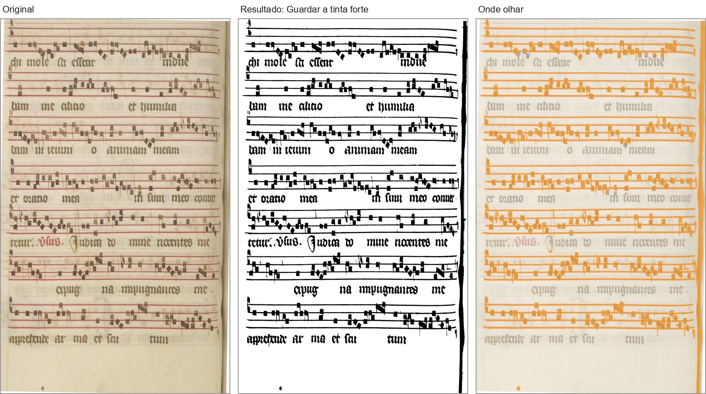
O mesmo com a moldura do Palatino, p. 10 (31%): a moldura é guardada em preto, igual ao Preto e branco de hoje.
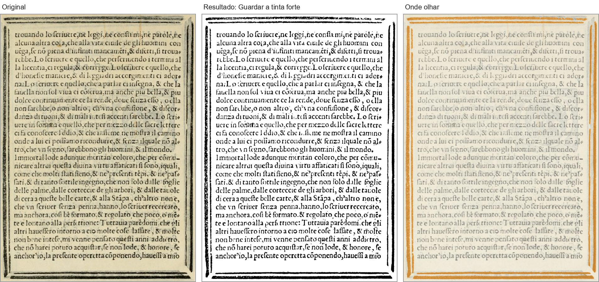
Exemplo de página que vai para revisar com razão. Palatino, p. 76: a capitular "S" gravada em madeira não foi reconhecida como gravura. O desenho dela é cinza claro, mais claro que as letras, e o jeito de fábrica o mandou para o branco. Olhe o quadro do meio, no alto à esquerda: da letra S só sobrou a moldura e um arco. No terceiro quadro, em vermelho, tudo o que sumiu. Ela foi para revisar hoje, mas porque a página tem moldura (37% de tinta forte), não por causa da letra.
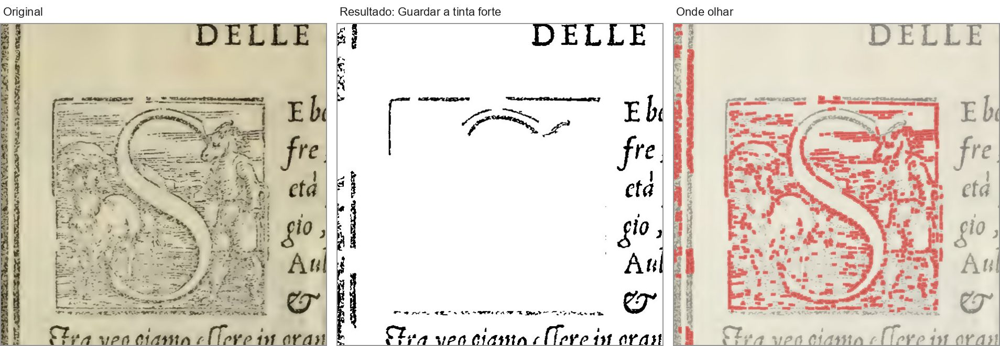
| # | O que acontece | Em qual jeito | O que sai na folha impressa | Grave? |
|---|---|---|---|---|
| 1 | O detector de gravura não acha um desenho de traço claro (capitular gravada, letra ornamental, diagrama fino) | Guardar a tinta forte | a parte clara some; o desenho sai comido | grave |
| Tudo em preto e branco | o desenho sai em preto e branco, como hoje | leve | ||
| Só o texto achado | o desenho some inteiro | grave | ||
| 2 | O detector não acha um desenho escuro (moldura, xilogravura, capitular escura) | Guardar a tinta forte e Tudo em preto e branco | sai em preto e branco, igual ao Preto e branco de hoje | leve |
| Só o texto achado | some | grave | ||
| 3 | O detector acha gravura onde não tem (mancha, remendo de papel) ou pega demais (pautas ao lado da iluminura) | os três | a mancha sai impressa em marrom; a música dentro da zona sai marrom em vez de preta | grave |
| 4 | O leitor de texto pega um pedaço de figura, capitular ou borda como se fosse texto (a sua pergunta) | Guardar a tinta forte | nada que se veja (testado) | nenhum |
| Tudo em preto e branco | nada (o leitor não é usado) | nenhum | ||
| Só o texto achado | sobra um pedaço solto no meio do branco | a página já está errada pelo #1, #2 ou #5 | ||
| 5 | Fora das linhas há música, tabela, moldura, capitular, número, letra colorida | Só o texto achado | some | grave |
| 6 | O leitor não acha uma linha de texto | Guardar a tinta forte | fica, se as letras são escuras; some, se são mais claras que as outras letras da página | grave (não aconteceu nas 59 páginas) |
| Só o texto achado | some | grave | ||
| 7 | Papel escuro ou beirada preta do scanner | os três (e o Preto e branco de hoje) | tarja ou faixa preta | é assunto do corte e do Preto e branco, não do Misto - mas hoje faz a página ir para revisar pelo aviso do Misto |
Palatino, p. 67: a capitular "M" não foi reconhecida como gravura. Olhe dentro do quadrado da letra, no quadro do meio: o fundo desenhado (folhas, figuras) sumiu quase todo; o Preto e branco de hoje o guarda.
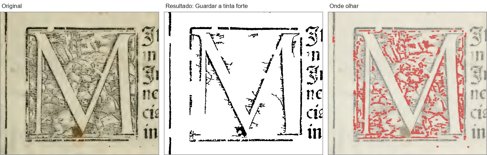
Palatino, p. 66, rodapé: as letras ornamentais "M." e "D." são de contorno claro. Olhe o "M" à esquerda, no quadro do meio: ficou pela metade.
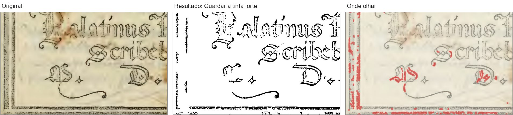
Manuscrito ljs47, p. 103: o diagrama de traço vermelho fino não foi reconhecido como gravura. Olhe as linhas horizontais e os arcos, no quadro do meio: ficaram picotados (no vermelho, o que o Preto e branco guardaria). Aqui o próprio Preto e branco de hoje também perde muito, porque o traço é muito claro.
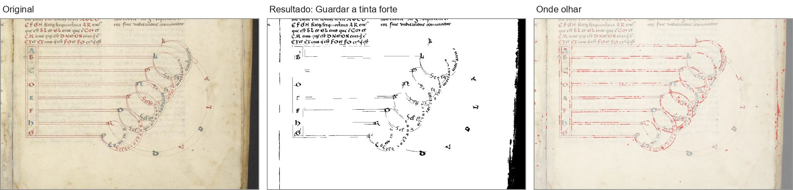
Marial, p. 454: um remendo de papel à esquerda e a mancha do verso à direita foram marcados como gravura (em verde, no terceiro quadro). No quadro do meio, as duas manchas marrons saem impressas. Isso não tem nada a ver com o leitor de texto: é o detector de gravura. O aviso de hoje pegou a página por outro motivo (a beirada escura).
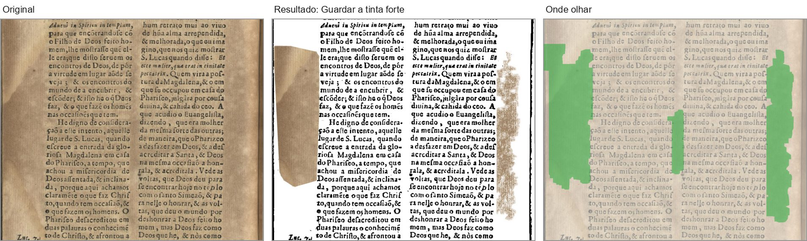
Antiphon, p. 260: a zona de gravura da iluminura se estende pelas pautas ao lado (verde). No quadro do meio, as notas dentro dessa zona saem marrons, como no original, e as de fora saem pretas.
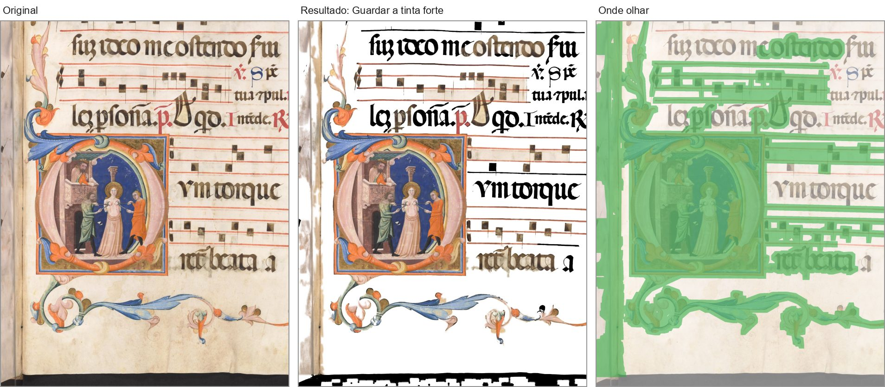
Boécio, p. 3 (folha de rosto): o leitor de texto achou o "IHS" no meio da gravura como se fosse uma linha de texto (azul, no terceiro quadro). No jeito de fábrica, nada de errado aparece (quadro do meio): a gravura inteira sai em preto e branco, igual ao Preto e branco de hoje.
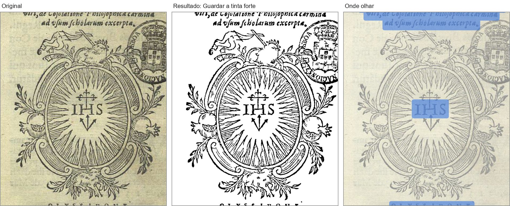
No "Só o texto achado", a mesma página: a gravura some inteira (vermelho) e o "IHS" fica boiando sozinho no meio da folha. O erro aqui é a gravura sumir; o "IHS" solto é só a parte mais visível dele.
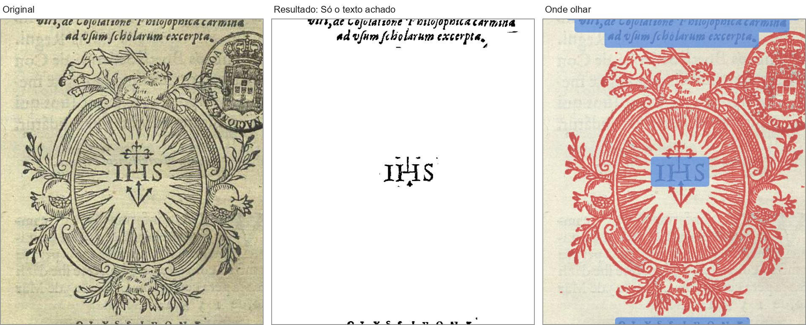
Palatino, p. 57: o leitor pegou um pedaço do floreio como texto (azul). No "Só o texto achado" sobra esse pedaço ("+P") solto no alto, à esquerda, e todo o resto da moldura some.
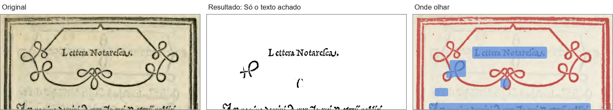
Conclusão sobre a sua pergunta: medi isso nas 59 páginas (linhas do leitor que um traço comprido de desenho atravessa). No jeito de fábrica, esse sinal mandaria 35 páginas para revisar, e 23 delas estavam certas. Não vale como critério sozinho.
Boécio, p. 7: a capitular "Q" e os sinais de métrica ("- - v v") do alto somem. (O vermelho na margem direita é a mancha do verso, que sumir é bom.)
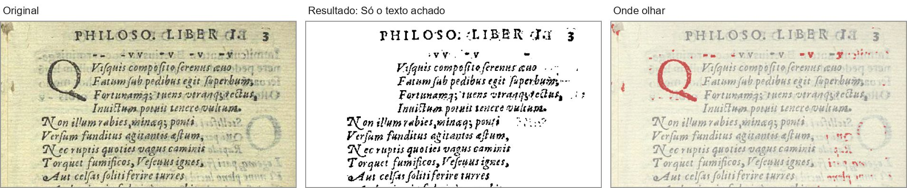
Na escola de Jesus, p. 197: somem os números "1 -", "2 -", "3 -" da margem esquerda (fica "2" e "3" sem o traço, e o "1" some inteiro). Página que parece só de texto, e mesmo assim perdeu algo.
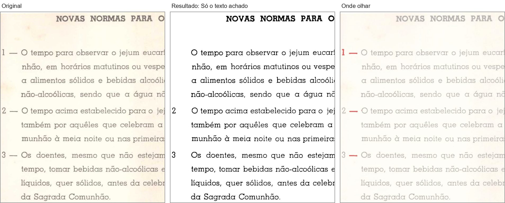
Graduale, p. 222: a música inteira some.
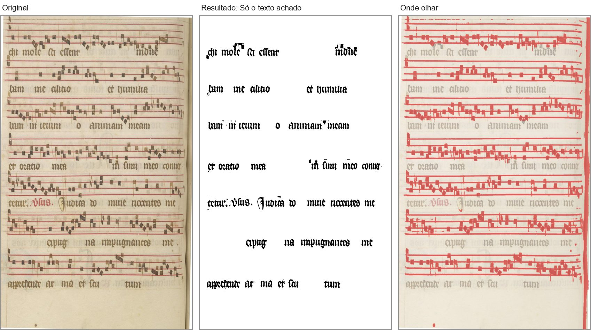
Rhetorica, p. 129: a gravura de página inteira some; sobram quatro letras que o leitor achou.
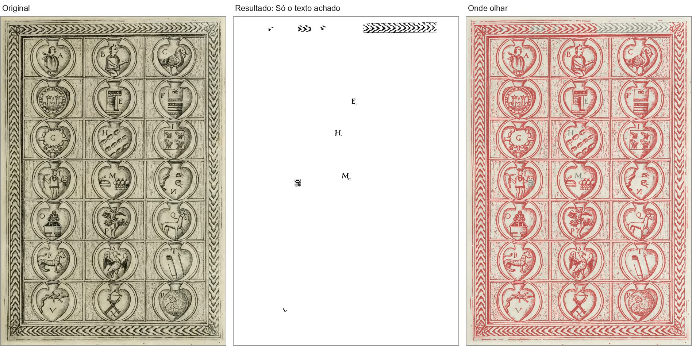
Os sinais que medi (todos só fora das gravuras achadas):
| Sinal | Em uma frase |
|---|---|
| O de hoje | quanta tinta forte sobrou fora do texto achado |
| Linha atravessada (a sua pergunta) | o leitor achou uma linha de texto que um traço comprido de desenho atravessa |
| Linha encostada na gravura | uma linha de texto achada encosta numa gravura achada |
| (1) Desenho comido | o jeito de fábrica apagou tinta, e ela estava amontoada num lugar (um desenho, não um pontinho solto da mancha) |
| (2) Figura passou da beirada | um pedaço grande de tinta encosta na gravura achada pelo lado de fora: a figura é maior do que o detector marcou |
| (3) Muita tinta apagada | o jeito de fábrica apagou mais de 2,5% da tinta da página |
| Pedaço forte grande | sumiu (no "Só o texto achado") um pedaço forte do tamanho de uma letra e meia ou maior |
No jeito de fábrica, "Guardar a tinta forte" (7 páginas erradas de 59):
| Critério (no jeito de fábrica, "Guardar a tinta forte") | Vão para revisar | Erradas de verdade entre elas | Com defeito leve | Certas (à toa) | Erradas que ficam de fora |
|---|---|---|---|---|---|
| Hoje: tinta forte fora do texto acima de 10% | 35 | 7 | 8 | 20 | 0 de 7 |
| O de hoje, com 30% | 23 | 4 | 7 | 12 | 3 de 7 |
| O de hoje só no "Só o texto achado" (no de fábrica, nunca) | 0 | 0 | 0 | 0 | 7 de 7 |
| Sua pergunta: o leitor pegou pedaço de figura, capitular ou borda como texto | 35 | 6 | 6 | 23 | 1 de 7 |
| Linha de texto encostada numa gravura achada | 21 | 3 | 6 | 12 | 4 de 7 |
| Novo (1): desenho comido - tinta apagada amontoada (2% ou mais) | 6 | 3 | 2 | 1 | 4 de 7 |
| Novo (2): figura passou da beirada da gravura achada (10% ou mais) | 7 | 3 | 1 | 3 | 4 de 7 |
| Novo (3): muita tinta apagada fora do texto (2,5% ou mais) | 11 | 4 | 4 | 3 | 3 de 7 |
| Novos (1) ou (2) | 13 | 6 | 3 | 4 | 1 de 7 |
| Novos (1), (2) ou (3) - a opção 1 | 18 | 7 | 5 | 6 | 0 de 7 |
| Todas as páginas | 59 | 7 | 12 | 40 | 0 de 7 |
No "Só o texto achado" (43 páginas erradas de 59):
| Critério (no "Só o texto achado") | Vão para revisar | Erradas de verdade entre elas | Com defeito leve | Certas (à toa) | Erradas que ficam de fora |
|---|---|---|---|---|---|
| Hoje: tinta forte fora do texto acima de 10% | 35 | 31 | 0 | 4 | 12 de 43 |
| O de hoje, com 30% | 23 | 22 | 0 | 1 | 21 de 43 |
| Sua pergunta: o leitor pegou pedaço de figura como texto | 35 | 30 | 1 | 4 | 13 de 43 |
| Novos (1), (2) ou (3) (os do jeito de fábrica) | 18 | 16 | 0 | 2 | 27 de 43 |
| Sumiu um pedaço forte do tamanho de uma letra e meia ou maior - a opção 1 | 55 | 43 | 1 | 11 | 0 de 43 |
| Todas as páginas | 59 | 43 | 2 | 14 | 0 de 43 |
Só nas 34 páginas do gabarito: hoje vão 18 para revisar (o comentário no programa diz 19; nesta rodada foram 18), e só 2 estavam erradas no jeito de fábrica (Palatino 66 e 67). Com a opção 1 iriam 7, com as mesmas 2 erradas.
Tempo: os sinais (1), (2) e (3) usam o que o Misto já calcula, mais uma conta de "janela" e uma de "pedaços encostados". Todos os sinais juntos, inclusive os que não recomendo, levaram 0,55 s na página do Palatino e 2,1 s na página maior do Livro de Horas, num script meu, não otimizado. Os três da opção 1 devem custar uma fração disso (estimado, não medido isolado).
Pela sua regra, a escolha vira o padrão de fábrica e as outras podem continuar como opção.
Opção 1 - medir o que foi apagado (recomendada). - Guardar a tinta forte: vai para revisar quando o programa apagou parte de um desenho (sinais 1 ou 3) ou quando uma figura passou da beirada da gravura achada (sinal 2). Frase sugerida: "Apaguei parte de um desenho que não reconheci como figura (ou uma figura passou da beirada). Confira." - Só o texto achado: vai para revisar sempre que sumiu um pedaço forte do tamanho de uma letra e meia ou maior. Frase sugerida: "Apaguei coisas fora do texto (capitular, moldura, música, número). Confira." - Tudo em preto e branco: nada muda. - Ganha: no jeito de fábrica, 18 páginas em vez de 35, com as 7 erradas; a frase diz o que olhar. No "Só o texto achado", nenhuma página errada fica de fora (hoje ficam 12). - Perde: os números foram acertados nestas 59 páginas (pode ter "decorado" estes livros); 6 páginas certas ainda vão (beirada preta do scanner, gravura de página inteira). As páginas em que uma moldura ou capitular escura sai em preto e branco (igual ao Preto e branco de hoje) deixam de ir.
Opção 2 - deixar como está (10%). - Ganha: nada a mudar; pegou as 7 erradas do jeito de fábrica. - Perde: 35 de 59 páginas para revisar, 20 delas à toa; o Kaique tende a deixar de olhar. No "Só o texto achado", 12 páginas erradas ficam de fora (capitular, número, letra dourada).
Opção 3 - opção 1, e o aviso de hoje vira uma observação mais fraca. - Igual à opção 1, mais: a página com muito desenho fora do texto (que sai em preto e branco) ganha uma marca "tem desenho que saiu em preto e branco", que não entra em "Para revisar". - Ganha: nada se perde de informação. Perde: é uma mudança de tela (um tipo de marca novo); precisa da sua aprovação antes.
Opção 4 - subir o limite para 30%. - Ganha: 23 páginas em vez de 35. - Perde: 3 páginas erradas do jeito de fábrica ficam de fora (Antiphon 260, Marial 454, Pesel 21) e 21 do "Só o texto achado". Não recomendo.
Se quiser manter as outras como opção, o lugar natural é uma escolha "Quanto o programa avisa: o essencial (opção 1) / como antes (opção 2)" nas opções do livro. Isso é mudança de tela; só com a sua aprovação.
core/pipeline.py, _filtrar_no_misto): o
Misto sai como "Tudo em preto e branco", sem aviso, e se a página já tinha o aviso de antes, ele fica como estava
(não é tirado nem posto). Não é perigoso (nada é apagado), mas o aviso pode ficar velho.scripts/ (rodar.py, medir.py, tabela.py, figuras.py). Os números e vereditos estão em
dados/sinais-e-vereditos.json."Vai hoje?" = o aviso de hoje (entre parênteses, a tinta forte fora do texto). "Vai na opção 1" = no jeito de fábrica.
| Página | Guardar a tinta forte | Só o texto achado | Vai hoje? | Vai na opção 1 (no jeito de fábrica)? | O que eu vi |
|---|---|---|---|---|---|
| Antiphon p. 088 | leve | errada | sim (60%) | não | A: a capitular B colorida pega um pedaco da pauta vermelha (fica em cor ao lado da pauta preta). C: a musica fora das linhas some. |
| Antiphon p. 260 | errada | errada | sim (12%) | sim | A: a zona de gravura cobre pautas inteiras: a musica fica desbotada, como no original, e a borda de folhas sai picotada. |
| Boecio p. 003 | certa | errada | sim (64%) | sim | C: a xilogravura e o carimbo somem; so o 'IHS' (que o leitor achou como texto) fica boiando. |
| Boecio p. 007 | certa | errada | não (3%) | não | C: a capitular Q e os sinais de metrica somem. |
| Boecio p. 008 | certa | errada | não (4%) | não | C: a capitular O e uma linha de sinais de metrica somem. |
| Boecio p. 022 | certa | errada | não (2%) | não | C: as duas capitulares Q e sinais de metrica somem. |
| Cursus p. 003 | certa | errada | sim (17%) | não | C: a capitular xilografica e o 'AD' do titulo somem. |
| Cursus p. 314 | certa | certa | sim (15%) | não | So a beirada preta do scanner (corte). |
| Escola p. 007 | certa | certa | não (1%) | não | - |
| Escola p. 035 | certa | certa | não (0%) | não | - |
| Escola p. 113 | certa | errada | não (0%) | não | C: o 'O' inicial de duas linhas some. |
| Escola p. 197 | certa | errada | não (0%) | não | C: os numeros '1 -', '2 -', '3 -' perdem pedacos. |
| Graduale p. 221 | certa | errada | sim (72%) | não | C: a musica some. |
| Graduale p. 222 | certa | errada | sim (76%) | não | C: a musica some. |
| Graduale p. 223 | certa | errada | sim (75%) | não | C: a musica some. |
| Graduale p. 269 | leve | errada | sim (29%) | sim | A: a borda de ramos sai meio em cor, meio preta. C: pedacos de pauta e notas somem. |
| Graduale p. 588 | leve | errada | sim (66%) | não | A: a capitular azul nao achada sai preta (igual ao Preto e branco). C: musica e capitulares somem. |
| Horas p. 011 | certa | certa | não (0%) | não | - |
| Horas p. 013 | certa | certa | não (4%) | não | - |
| Horas p. 014 | leve | errada | sim (55%) | não | A: a moldura dourada nao achada sai preta e grossa (igual ao Preto e branco). C: moldura e reguas da tabela somem ou ficam picotadas. |
| Horas p. 016 | certa | certa | não (1%) | não | - |
| Horas p. 026 | certa | certa | não (5%) | não | - |
| Horas p. 027 | certa | errada | não (3%) | não | C: letras douradas do comeco das linhas somem. |
| Horas p. 047 | certa | certa | não (0%) | não | - |
| Horas p. 175 | leve | errada | não (2%) | não | A: a capitular S decorada nao achada sai como bloco preto (igual ao Preto e branco). C: a capitular some, fica um quadrado vazio. |
| Ljs47 p. 026 | certa | errada | sim (55%) | sim | C: as iniciais azuis e vermelhas somem. |
| Ljs47 p. 049 | leve | leve | não (0%) | não | A pagina inteira virou gravura: manchas impressas em cor. |
| Ljs47 p. 064 | leve | leve | não (1%) | não | Quase toda a pagina virou gravura: manchas da margem em cor. |
| Ljs47 p. 103 | errada | errada | sim (65%) | sim | A: o diagrama vermelho de tracos finos (nao achado como gravura) fica picotado - somem tracos que o Preto e branco guarda. C: o diagrama some. |
| Marial p. 007 | leve | errada | não (5%) | não | A: o canto manchado foi marcado como gravura (mancha em cor). C: '& o' somem numa linha. |
| Marial p. 454 | errada | errada | sim (13%) | sim | A: um remendo de papel e a mancha do verso foram marcados como gravura: saem impressos em marrom. |
| Marial p. 840 | certa | certa | sim (15%) | não | - |
| Matematica p. 032 | certa | certa | sim (24%) | sim | As faixas pretas do scanner (assunto do corte, nao do Misto). |
| Matematica p. 072 | certa | certa | sim (34%) | sim | As faixas pretas do scanner (assunto do corte, nao do Misto). |
| Opus majus p. 003 | certa | errada | sim (13%) | não | C: o selo da editora some; sobra 'PRESS' picotado. |
| Opus majus p. 011 | certa | errada | não (1%) | não | C: a capitular C some. |
| Opus majus p. 020 | certa | certa | não (8%) | não | - |
| Opus majus p. 165 | certa | errada | não (6%) | não | C: as linhas dos dois diagramas somem; sobram as letrinhas. |
| Opus majus p. 256 | certa | errada | sim (37%) | não | C: reguas e numeros da tabela picotados. |
| Palatino p. 005 | certa | certa | não (0%) | não | - |
| Palatino p. 007 | certa | errada | não (1%) | não | C: a capitular V e letras do titulo somem. |
| Palatino p. 009 | certa | errada | sim (46%) | não | C: a capitular Q e a moldura somem; sobra um pedaco de fio. |
| Palatino p. 010 | certa | errada | sim (31%) | não | C: a moldura some. |
| Palatino p. 057 | certa | errada | sim (61%) | não | C: moldura, floreios e capitulares somem; sobram pedacos soltos. |
| Palatino p. 066 | errada | errada | sim (42%) | sim | A: a letra ornamental 'M' do rodape, de contorno claro, fica pela metade (o Preto e branco guarda inteira). |
| Palatino p. 067 | errada | errada | sim (42%) | sim | A: a capitular xilografica M perde quase todo o desenho de dentro (o Preto e branco guarda). |
| Palatino p. 076 | errada | errada | sim (37%) | sim | A: a capitular xilografica S some quase inteira; fica so a moldura dela. |
| Palatino p. 104 | certa | errada | sim (20%) | não | C: reguas da tabela picotadas. |
| Palatino p. 113 | certa | errada | sim (42%) | sim | C: a moldura em pergaminho some. |
| Pesel p. 021 | errada | errada | sim (21%) | sim | A e C: a legenda no papel escuro vira tarja preta (o Preto e branco faz o mesmo; nao e do Misto). |
| Rhetorica p. 018 | certa | errada | sim (10%) | não | C: fios da moldura picotados. |
| Rhetorica p. 034 | certa | certa | não (6%) | não | - |
| Rhetorica p. 073 | certa | errada | sim (26%) | não | C: chaves e ornamentos somem. |
| Rhetorica p. 129 | certa | errada | sim (91%) | sim | C: a gravura de pagina inteira some; sobram 4 letras. |
| Rhetorica p. 160 | certa | errada | não (9%) | não | C: fios da moldura somem. |
| Siebmacher p. 007 (direita) | leve | errada | sim (92%) | sim | A: moldura de floreios nao achada sai em preto e branco. C: a moldura some. |
| Siebmacher p. 007 (esquerda) | leve | errada | sim (45%) | sim | A: idem. C: moldura e capitular somem. |
| Siebmacher p. 009 (direita) | leve | errada | sim (91%) | sim | A: idem. C: a moldura some. |
| Siebmacher p. 009 (esquerda) | leve | errada | sim (53%) | sim | A: idem. C: moldura e capitular somem; a assinatura fica picotada. |
Editor de Impressão · gerado em 06/10/2026 às 13:16